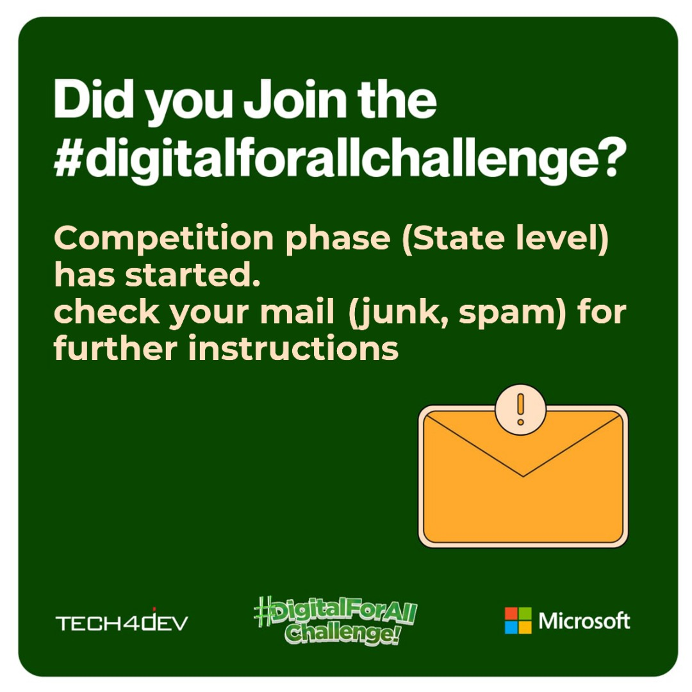
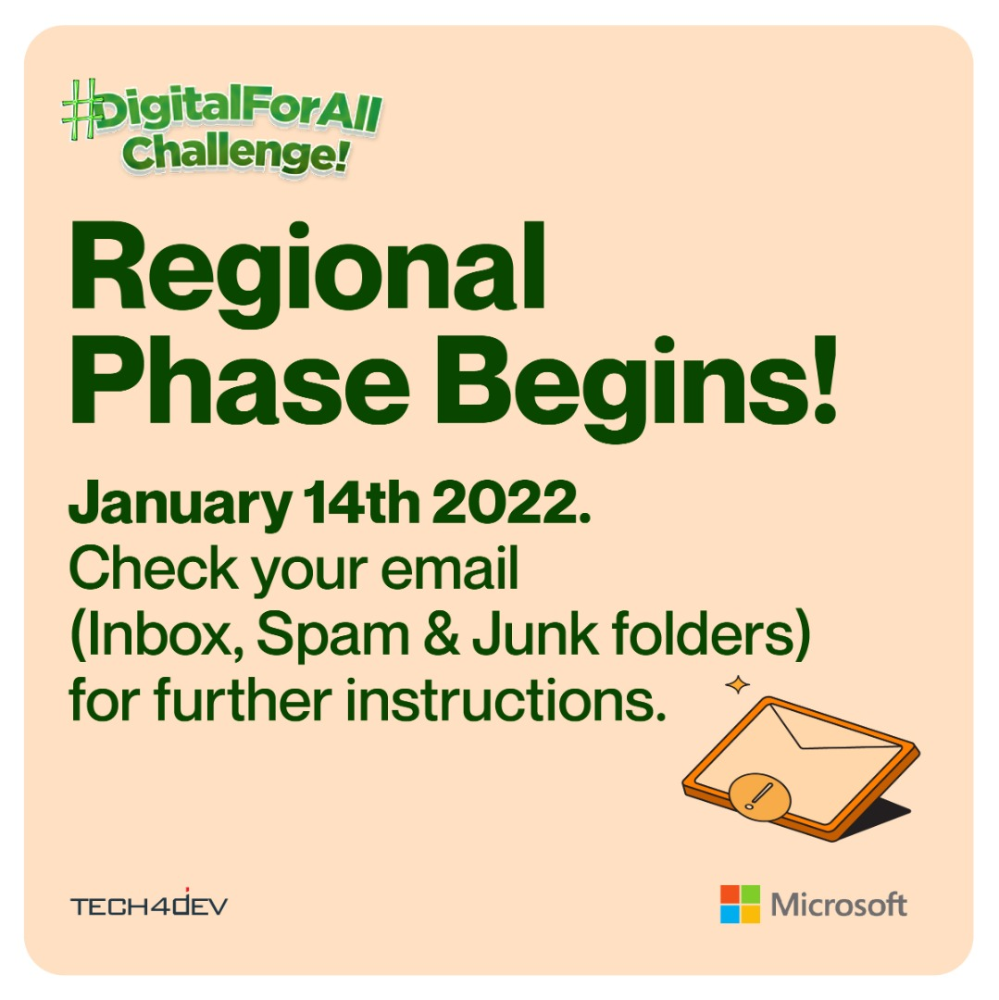
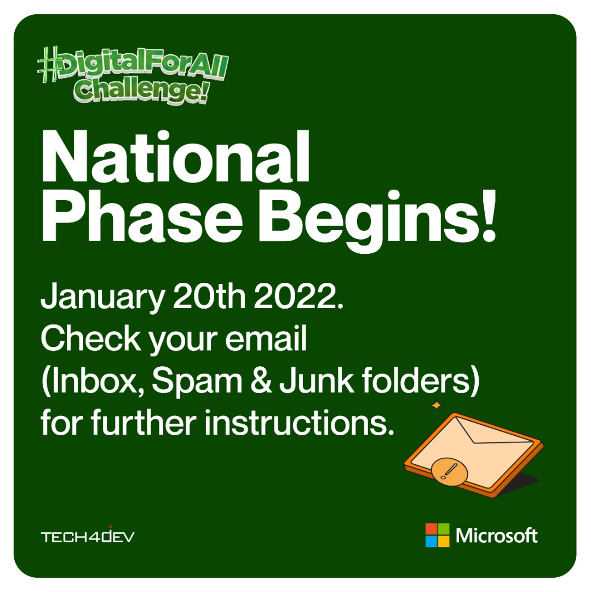

Back
Back
#Digitalforallchallenge Winners Selection Process
| January 28, 2022


#Digitalforallchallenge Winners Selection Process
We put out the first call for application for the #Digitalforallchallenge on the 16th of September 2021. The #Digitalforallchallenge is a program designed to equip people with digital skills while providing them with incentives as they learn. The #Digitalforallchallenge had a learning phase that ran for almost four months, after which we launched the competition stage.
The #Digitalforallchallenge learning stage had two levels: the Basic level, the Intermediate level, and the competition stage had three steps preceding the grand finale stage. We had the State level, the regional level, and the National level.
Over 17,000 people registered for the #Digitalforallchallenge, and out of these people, 1,527 people moved to the State level competition. The Basic Literacy level had 599 participants, and the Intermediate level had 928 participants. We sent emails to the participants communicating the quiz's time, date, and guidelines, and we posted updates on our social media handles.
The State level competition was a quiz based on what they had learned during the #Digitalforallchallenge learning phase and was held on the 10th of January between 6 am – 12 pm, 20 questions for 10 minutes. Due to some technical issues, some beneficiaries were unable to do the test, so we re-opened the test on the 11th of January from 12 pm - 3 pm again
Eighty-seven participants moved on to the regional level. Those who moved onto the regional level were selected according to their scores, learning tracks, and regions. We achieved this by choosing the highest in each region per learning track. We did this to ensure that participants duly represented each region and learning track at the regional level of the competition.
The regional competition took place on the 14th of January. It was also virtual and took the same form as the state-level competition, 25 questions for 7 minutes for the Basic Digital Literacy level and 20 minutes for 7 minutes for the Intermediate level. At the State level, we sent emails to beneficiaries about the time and date for the test and posted them on our social media. After closing the regional competition, we realized that some participants did not take the test for different reasons. We reached out to them and re-opened it that same day for them to take the test.
After the regional competition, eight people from the Basic Digital Literacy qualified from the grand finale, while five people from the Intermediate Level, representing each learning track, qualified. However, we needed just three finalists from the Basic Literacy level for the grand finale. So, we moved the eight people that qualified from the Basic Digital Literacy level into another stage, the National Stage of the competition.
We sent out emails informing them, put up the notice on our social media handles, and called the participants personally to ensure they were aware. On the 20th of January, all eight beneficiaries took the test, and we chose the three highest scores to move on to the Grand Finale.
The Grand Finale of the #Digitalforallchallenge would be a physically closed event. However, we would stream it across all our social media platforms. We are excited to bring the #Digitalforallchallenge to a close this way. Here, participants would be competing for the grand prize of One Million Naira (1 million) in the Basic Digital Literacy Level and Two Million, Five Hundred Naira (2.5 million) in the Intermediate level.
We look forward to crowning our winners and bringing the challenge to a close. Follow us on our social media platforms and turn on post notifications to follow our journey.